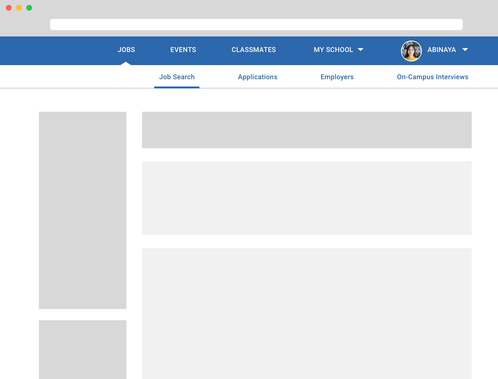

As part of the KPCB Design Fellows Application, I decided to redesign a feature of Handshake (one of KPCB's portfolio companies). Brown (and many other universities) uses Handshake to help its students find internship and job opportunities, among other things.
Based on their website, Handshake's mission is to help students find meaningful careers – primarily through the form of job and internship opportunities. To understand if this company mission 1) aligned with its' users' needs and 2) was even being fulfilled, I decided to talk to several of my college peers.
Ultimately, the key problem areas seemed to be:
My designs look at what I've pinpointed to be both the major goal of Handshake and the greatest need / painpoint of users: the job search page. Primarily, I want to focus on the university student side because 1) this is the user group that I imagine drives most of Handshake's KPI's and 2) I myself am able to more easily reach university students for feedback on my designs.
I will focus on the PC job-searching experience, because after conducting several informal user studies, every student whom I talked to told me that they always applied to jobs and searched for jobs on their computer. In this case, mobile is a consideration that factors into my PC designs, however the redesigns were only made for PC.
Based on my design and HCI knowledge, I formulated the following hypotheses:
As I set out to test my hypotheses with different design solutions, I began with multiple low fidelity wireframes made in Sketch. In understanding how to augment and reinforce information hierarchy, I played with color value and horizontal vs. vertical navigations as a means of expressing information flow.
Disregarding interaction design as of right now and evaluating purely from an information standpoint, the immediate pros of a vertical primary navigation are 1) more space for more links and content (and subsequently better discovery of features on Handshake) and 2) the opportunity to better categorize different features on a higher level (for example, some links might be related to a student's profile and account while other links simply lead to university-supplied external resources).
I added more detail and precision to the low fidelity wireframes and presented them to random university students, asking them to explain the interface to me and any other observations they had:

The overall consensus was that while the vertical sidebar certainly allowed for better discoverability and navigation of Handshake overall, the horizontal sidebar was clearer in showing the entire navigation system from a higher level all the way to its more granular architecture.
To better indicate the relation between the primary and secondary navigations and the content on the page, I used different ways of emphasizing the user's place in each navigation system and added an extra color for reinforced color hierarchy:
I continued to then focus on the placement, content, and visual design of the filter and search bar, asking for feedback from users, weighing the pros and cons, and also trying to understand how certain features might translate across different devices and screen sizes:
Finally, I created a high fidelity prototype of scrolling interactions in Framer to solidify the feel of the app and ensure that user attention is always directed to the right place at the right time.

This redesign happened over the course of a week. As a result, I learned that small redesigns can definitely have a big impact – a lot of what you do is just dependent on scope and the way you go about prioritizing problems.
If I were to take this further, I would want to think about how my designs are applicable and scalable to the rest of Handshake. For example, how can we make use of color hierarchy, space, type, such that users derive a lot of utility out of Handshake's other features too?